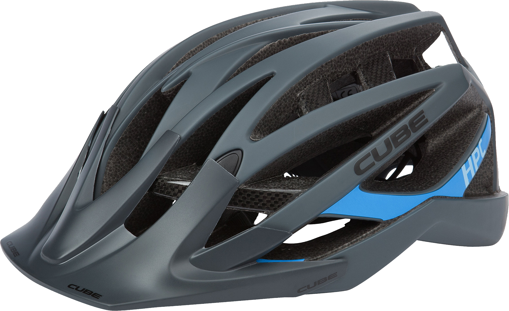
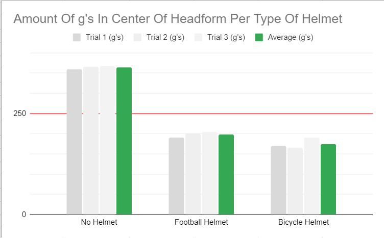

How well does a football helmet protect compared to a regular bicycle helmet compared to bare head/no helmet from a 20 ft. fall onto a flat anvil?
How I Came Up With My Question:
A Simple Google Search
Why I Chose My Question:
It seemed interesting and fun to research
Sleep:
test scores, body function, alertness, ability to process, etc
BMI:
risk, limitations, control, etc.
Why I didnt Choose These:
It seemed hard to find all the information in a good format and write a question and it didnt seem as fun as the helmets
Brains can be injured by impact and by sudden violent movement of the head
Bicycle helmets designed to handle major crash energy generally contain a layer of crushable foam.
For impact testing, the typical test apparatus consists of a rig that drops a helmeted headform in a guided freefall to an anvil on the floor.
The variables in the test include the drop height and the shape of the anvil
Instruments inside the headform register how much shock the headform
Instruments inside the headform register how much shock the headform experienced. Based on g’s.
The drop tower is usually 5.8 meters tall
Number of g's in the center of headform
- Temperature of the Testing Room
- Drop Height
- Drop Tower
- Center Of Impact
- Type of Anvil (Flat Anvil)
If we drop the bicycle helmet from the drop tower, I think that will have the lowest amount of g’s in the center of the headform compared to the football helmet or a bare head with no helmet because bicycle helmets usually have a layer of crushable foam which might help them withstand a bit of impact.
First I would lock the helmet into the center of the drop tower, I would then drop the actual helmet and record the amount of g’s in the center of the helmet. I would then group the helmet based on the number of g’s into 3 categories, and sort them by color. The max amount of g’s there can be to be in a safe limit is 250, so i would put the max amount in a column.
- Low amount of g’s (red)
- Right amount of g’s (green)
- High amount of g’s(red)
- Borderline amount of g’s(yellow)
If they all fall under the same category, I would then see how many g’s each helmet had and then decide the winner. I would also test this many times to get accurate results, I would also switch out the helmet each test run.
|
Trial 1 |
Trial 2 |
Trial 3 |
Average |
| No Helmet |
360 |
365 |
368 |
364.333 |
| Football Helmet
| 190 |
200 |
205 |
198.333 |
| Bicycle Helmet |
170 |
165 |
190 |
175 |

My results show that the bicycle helmet has a better drop test compared to a football helmet or no helmet at all. The average number of g’s in the center of the headform of the bicycle helmet was 175, compared to approx. 200g’s on the football helmet and the approx. 365g’s on the no helmet. This also shows that my hypothesis was correct, I think the crushable foam on the inside of the bicycle helmet really helped it have a better result on the drop test.
A bicycle helmet does the best in a drop test, second being a football helmet. You should definitely, always wear a helmet when doing activities like football, biking, skiing, etc., because not wearing a helmet could lead to things like concussions, brain damage or even death since the max g’s exceed 250.